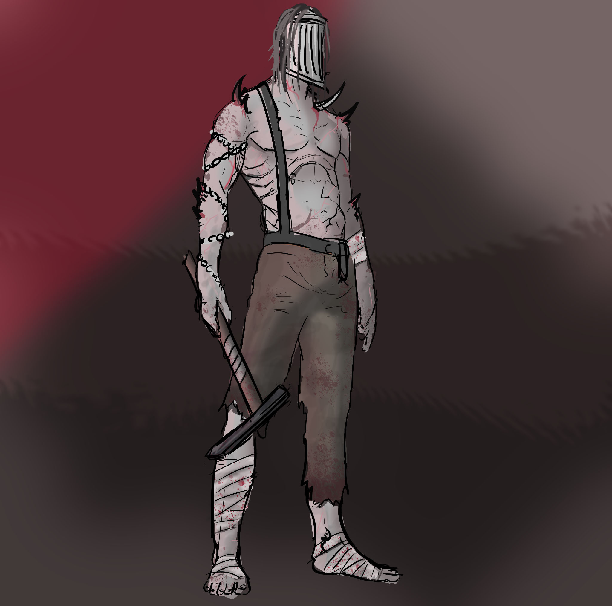

Metaballs_Multithreaded | Dark Acropolis | Regiment AI | Quadrapedal Character Controller | OpenGL Graphics Engine | Attack on Titan TGTG
Dante's Roulette is a game made in Unreal 5 and plays as a rogue-like first-person shooter game where the player must traverse the layers of Hell, while collecting various items like 'Relics' that will provide various effects and 'Imprints' which the player can use to create various custom bullets in which they can load into their trusty revolver 'Virgil'.
The game also features inspiration from the deadly game, 'Russian Roulette' with lots of randomness built into the game to force player to adapt and encourage unique builds. Additionally, the player will be confronted with situations where they need to weigh the odds.
One of the main features of the game is the ability to use 'Imprints' which are components with unique effects that the player uses to make custom bullet presets. Each bullet can have many effects as the player owns and each effect can be made stronger than others as long as it is within a certain budget. Additionally, the players revolver must be loaded bullet-by-bullet, which does allow the player to order their custom bullets fire order.

This is the game's minion enemies finalized concept image by Ethan Snelleksz
My team for this project consists of 3 people, with myself as the programmer and two artists, Jake Morgan and Ethan Snelleksz, with each of us sharing design responisbilities. The way structured development was to progress in clear stages: Design, Pre-Alpha, Alpha, Beta and Gold.
During the Design stage we worked together to concept and design the game. Once we had prepared our GDD, TDD and art bible we worked together on concepting characters, mechanics and other assets. Usually this followed the process of mapping out ideas and needs, each of us providing thumbnail designs, some debate, a new set of full designs from each of us and then an agreed final design which one of the artists would do final render of.
When designing my implementation of the mechanics we decided on and systems we would need I would begin with researching relevant systems, relevant industry standards/common industry methods. Then I would usually draft it in a notebook, comparing my ideas for different implementations and then I would implement and test it.
Pre-Alpha started around the end of the Design stage, here we started blocking out the game's systems and assets.
We are nearly out of Alpha at the time of writing this and in this stage we are aiming to have all of our functional assets and systems(at a minmimum level) in excluding animations and VFX, with a functional game loop.
In Beta we plan on having all our systems and assets finished and in Gold we will be polishing things like animation/vfx and making sure the roster of relics and imprints is plentiful.
My Goal: Although going into this project I have many goals, when it came to developing my systems, I wanted it to be more challenging than what I thought the scope of the project was going to provide, so I put a-few goals in mind for development.
Unreal 5 and GAS: My first goal was to learn as much as I can about Unreal 5 and making robust systems with it's tools. Although I was already fairly comfortable in Unreal, I wanted to get more inimate knowledge with its tools which is why I decided we would be using the (GAS)Gameplay Ability System instead of making my own system for our effects and abilities and I decided we would be using Unreal's behaviour trees.
Although these systems may be over kill for the scope of this game, I wanted to take the opportunity to become experienced with them as they are used in industry and it was in line with my second goal.
Scalability: My second goal was to make my systems as robust and scalable as possible. I wanted to focus on making systems with large potential for growth especially because we do have plans for making the game bigger if the opportunity arises and I would be able to use them in future Unreal Projects which I'll definentley do with my UI systems.
When designing my systems for characters and spawning enemies I had read about how God of War had made their game very data driven and it had inspired me to do the same. So the way our game handles characters and items is we have a base class for characters and items and then will build it based on data inputed to it, so this way we have one character class that could be many different characters and can be made to vary in different ways without needing to make and implement/make new character assets.
This inspiration was also present when I was implementing GAS into the player, npc's and items as I became keen of the idea of making sure abilities and items could be shared between the player and npc's which would allow us to have features like enemies who have an item drop benefitting from said item which would really spice up gameplay and item acquisition.
In addition to GAS, our enemies also made use if Unreal's behaviour trees which I have also implemented it with GAS.
I am also quite proud of how I have implemented our UI system. After quite a-bit of research in how UI is done in industry, I opt'ed to implement a system that utilizes a Primary Layout in which it is a stack of layers for different levels of UI in which menus can be added and removed. There is the a Game Layer, a Game Menu Layer, a Menu Layer and a Modal Layer. Additionally, I implemented a Blueprint Function Library which other Blueprints in the game could use to request the addition and close of certain UI elements so that nothing would require a reference to individual menus. This also had the added benefit of that the BPFL would manage input and menu conflicts without non UI blueprints needing to get involved.
Implementing the systems for the player weapon was quite simple and the main features for it is the Weapon Handler Component which manages the players guns(we only have one weapon but it's build so adding more would be easy), bullets and Imprints.